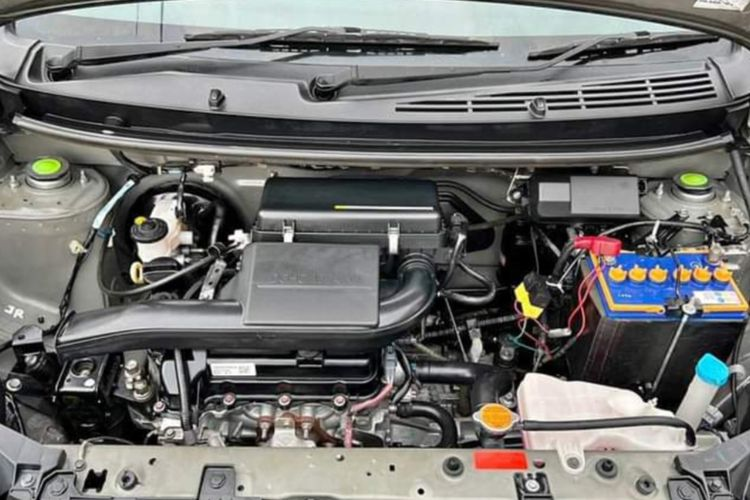
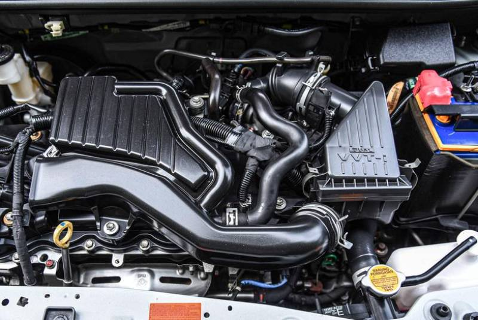

sumber : https://otomotif.kompas.com/read/2023/01/19/171200215/mesin-agya-dan-ayla-lawas-bergetar-apa-penyebabnya-
Ayla bermesin 1000cc
- Kapasitas Mesin : 998 cc
- Tenaga : 65 PS
- Torsi : 86 Nm
- Drivetrain : Front Wheel Drive
- Airbag : -
- Harga :
- AT : Rp 134.200.000
- MT : Rp 125.150.000

sumber : https://moladin.com/blog/performa-mesin-daihatsu-ayla/
Ayla bermesin 1200cc
- Kapasitas Mesin : 1197 cc
- Tenaga : 88 PS
- Torsi : 108 Nm
- Drivetrain : Front Wheel Drive
- Airbag : 2
- Harga :
- AT : Rp 146.450.000
- MT : Rp 136.450.000